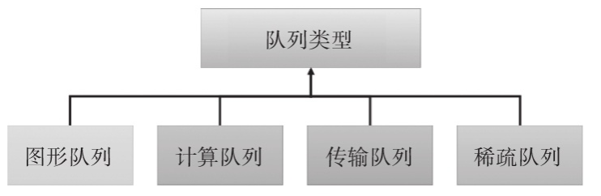
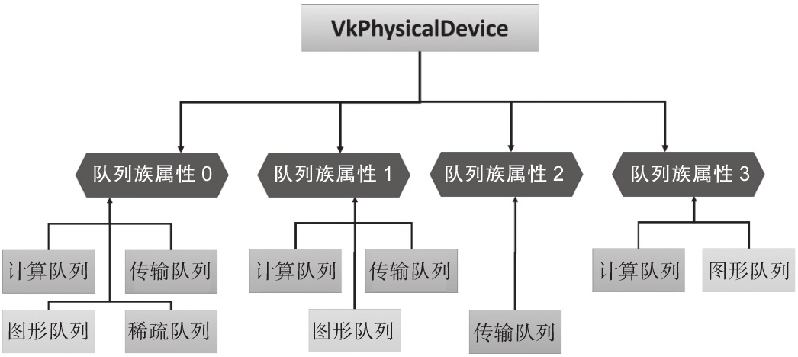

我们已经创建了Instance对象和surface对象，接着我们就需要查询可用的物理设备（显卡GPU）以及显卡驱动提供的执行Vulkan绘制命令(执行Vulkan绘制函数)的队列类型，我们称为队列族。
Vulkan允许我们选择任意数量的显卡设备并同时使用它们，对于多显卡系统特别有用，本教程这里只使用一个物理设备：
① 在VulkanAppCore 类内部添加VkPhysicalDevice physicalDevice = VK_NULL_HANDLE;对象
② 通过编写查找函数查询可用的VkPhysicalDevice physicalDevice 对象
1void pickPhysicalDevice() {2}
③ 将pickPhysicalDevice()函数添加到initVulkan()函数中
xxxxxxxxxx61void initVulkan() {2createInstance();3CreateVkDebugUtilsMessengerEXT();4createSurface();5pickPhysicalDevice();6}
④ 完善pickPhysicalDevice()
xxxxxxxxxx291void pickPhysicalDevice()2{3//❶首先需要查询系统中安装的显示设备GPU的数量4uint32_t _VkPhysicaldeviceCount = 0;5vkEnumeratePhysicalDevices(instance, &_VkPhysicaldeviceCount, nullptr);6if (_VkPhysicaldeviceCount == 0) //如果显示设备GPU的数量为您报错退出7{8throw std::runtime_error("没有发现 GPUs设备，程序退出！");9}10//❷ 枚举系统中所有显示设备GPU,并保存到数组中11std::vector<VkPhysicalDevice> _VkPhysicaldevices(_VkPhysicaldeviceCount);12vkEnumeratePhysicalDevices(instance, &_VkPhysicaldeviceCount, _VkPhysicaldevices.data());13// ❸对std::vector<VkPhysicalDevice> _VkPhysicaldevices数组中每个物理设备进行遍历，15// 选择一个可用的物理设备,我们通过一个独立的isDeviceSuitable函数进行判断16for (const auto& device : _VkPhysicaldevices)17{18if (isDeviceSuitable(device))19{20physicalDevice = device;21break;23}24}25//❹ 如果没有找到合适的物理设备，程序报错退出26if (physicalDevice == VK_NULL_HANDLE) {27throw std::runtime_error("failed to find a suitable GPU!");28}29}
⑤ 编写检测可选设备是否满足要求的函数isDeviceSuitable（）函数
在VulkanAppCore 类内部添加添加isDeviceSuitable函数
xxxxxxxxxx31bool isDeviceSuitable(VkPhysicalDevice device) {2return true;3}
检查可以支持Vulkan运行的物理设备，设计后续能否为Vulkan运行提供做大支持的运行环境，对于多显卡系统当然是选择性能更为先进的显卡，如作者运行的计算机一个显卡为Nvidia 的6显卡一个NVIDIA的GeForce 4060，一个是Intel的集成显卡，当然是选择NVIDIA显卡。
为了选择合适的设备，我们需要获取更加详细的设备信息。对于基础的设备属性，比如名称、类型和支持的Vulkan版本可以通过vkGetPhysicalDeviceProperties函数进行查询。
VkPhysicalDeviceProperties vkPhysicalDeviceProperties; vkGetPhysicalDeviceProperties( _vkPhysicalDevice, &vkPhysicalDeviceProperties);
对于纹理压缩、64位浮点和多视口渲染(常用于VR)等特性的支持情况可以通过vkGetPhysicalDeviceFeatures函数查询：
VkPhysicalDeviceFeatures vkPhysicalDeviceFeatures; vkGetPhysicalDeviceFeatures( _vkPhysicalDevice, &vkPhysicalDeviceFeatures);
假设应用程序只能在支持几何着色器的显卡上运行，那么isDeviceSuitable函数可以这样判断：
bool isDeviceSuitable(VkPhysicalDevice vkPhysicalDevice) { VkPhysicalDeviceProperties _vkPhysicalDeviceProperties; VkPhysicalDeviceFeatures _vkPhysicalDeviceFeatures; vkGetPhysicalDeviceProperties( _vkPhysicalDevice, & _vkPhysicalDeviceProperties); vkGetPhysicalDeviceFeatures(vkPhysicalDevice, & _vkPhysicalDeviceFeatures);
return (_vkPhysicalDeviceProperties.deviceType ==
VK_PHYSICAL_DEVICE_TYPE_DISCRETE_GPU && _vkPhysicalDeviceFeatures.geometryShader ）; }
我们开发的实验性应用程序仅需要最基础的Vulkan支持环境，这涉及到检测物理设备上的队列族、检测物理设备支持的Vulkan扩展、检测交换链扩展的支持 ，这些概念将在下面章节讲述，本部分我们仅仅使用一个空的isDeviceSuitable函数：
xxxxxxxxxx31bool isDeviceSuitable(VkPhysicalDevice device) {2return true;3}
⑥ 我们注意到，我们定义的VkPhysicalDevice physicalDevice = VK_NULL_HANDLE;对象是通过vkEnumeratePhysicalDevices函数获得的设备句柄，而不是创建出来的，也就是所Vulkan的VKInstance内部本身就保存了VkPhysicalDevice physicalDevice 物理设备的列表，我们只是选择了一个可用的物理设备而已，所以VkPhysicalDevice physicalDevice对象并不需要我们在程序中销毁，在VKInstance对象销毁过程中Vulkan会自动处理。
⑦ 枚举设备支持的扩展并交验应用程序需要的扩展是否可用
知识点： vulkan的核心设计理念是高度抽象化，同时进来不强制标准化 GPU硬件的具体实现，为了达到这样的效果，所以有了扩展API， 扩展功能实际上主要是满足一下几个目的：
◆在驱动中实现：厂商在显卡驱动中实现了某些硬件功能的支持；
◆ 通过 Vulkan 暴露给开发者：通过扩展 API，让开发者可以访问这些驱动功能。
◆ 调用 GPU 硬件执行操作：当开发者调用这些扩展时，驱动会将它们翻译成底层硬件指令，由 GPU 执行实际的操作。
Vulkan应用层开发过程中常用的设备扩展主要有：
VK_KHR_surface：用于与窗口系统进行交互的扩展，可以创建Vulkan表面。
VK_KHR_swapchain：用于创建交换链的扩展，用于在窗口系统和Vulkan设备之间进行图像交换。
VK_KHR_display：用于与显示设备进行交互的扩展，可以在显示设备上呈现图像。
VK_KHR_get_physical_device_properties2：扩展了获取物理设备属性的功能，提供更详细的设备信息。
VK_NV_ray_tracing：这是由NVIDIA提供的扩展，为支持光线追踪的GPU提供接口。
VK_EXT_memory_budget：这是一个由多家厂商共同支持的扩展，用于管理显存。它帮助开发者更好地控制和管理显存的使用，避免内存溢出等问题。
VK_KHR_sampler_mirror_clamp_to_edge：这个扩展解决了纹理采样时的边界问题，避免边缘伪影的出现。通过驱动实现的扩展API，开发者可以更灵活地处理纹理采样。
VK_KHR_depth_stencil_resolve：这个扩展优化了深度和模板缓冲的多重采样（MSAA），通过驱动暴露硬件能力，提升渲染性能。
枚举到物理设备后，首先需要检测该设备是否支持我们设计的应用程序需要的扩展。应用程序设计过程中会用到很多Vulkan扩展，一般会构建一个表格，列出程序需要的扩展名称：
❶ 在class VulkanAppCore外部添加应用程序需要的扩展表：目前我们仅仅使用VK_KHR_SWAPCHAIN_EXTENSION_NAME扩展
xxxxxxxxxx41//VK_KHR_SWAPCHAIN_EXTENSION_NAME 是Vulkan SDK中定义的一个宏，表示交换链扩展名称2inline const std::vector<const char*> deviceExtensions = {3VK_KHR_SWAPCHAIN_EXTENSION_NAME4};
❷ 设计获得设备扩展的函数与保存所选设备可用扩展的列表
class VulkanAppCore 内部添加如下代码：
xxxxxxxxxx11std::vector<VkExtensionProperties> m_VkDeviceExtensionPropertis;
xxxxxxxxxx121//获得设备支持的所有Device类型的扩展属性列表2std::vector<VkExtensionProperties> getAvailableExtensionsProperties(VkPhysicalDevice _physicalDevice)3{4uint32_t extensionCount;5vkEnumerateDeviceExtensionProperties(_physicalDevice, nullptr, &extensionCount, nullptr);6std::vector<VkExtensionProperties> extensions(extensionCount);7if (extensionCount == 0) {8throw std::runtime_error("No extensions found!");9}10vkEnumerateDeviceExtensionProperties(_physicalDevice, nullptr, &extensionCount, extensions.data());11return extensions;12}
❸ 添加检测物理设备是否支持应用程序需要的扩展列表的函数
xxxxxxxxxx251bool CheckPhysicalDeviceExtensionSupport(VkPhysicalDevice _physicaldevice,2const std::vector<const char*>& _AppNeedPhysicalDeviceExtensions)3{4std::vector<VkExtensionProperties> availableExtensions = getAvailableExtensionsProperties(_physicaldevice);5bool hResult = true;6for (int i = 0; i < _AppNeedPhysicalDeviceExtensions.size(); i++)7{8std::string tempExtensionName = _AppNeedPhysicalDeviceExtensions[i];9bool bFind = false;10for (int j = 0; j < availableExtensions.size(); j++)11{12if (tempExtensionName == availableExtensions[j].extensionName)13{14bFind = true;15break;16}17}18if (bFind == false)19{20hResult = false;21std::cerr << "没有找到需要的扩展属性" << tempExtensionName << std::endl;22break;23}24}25}
❹ 修改isDeviceSuitable（）函数，判定设备是否可用
x1bool isDeviceSuitable(VkPhysicalDevice _physicaldevice)2{3bool isPhysicalDeviceExtension = CheckPhysicalDeviceExtensionSupport(_physicaldevice,4deviceExtensions);5return isPhysicalDeviceExtension;8}
❺ 修改pickPhysicalDevice()函数，保存所选设备可用的扩展列表
m_VkDeviceExtensionPropertis = getAvailableExtensionsProperties(physicalDevice);
xxxxxxxxxx291void pickPhysicalDevice()2{3//❶首先需要查询系统中安装的显示设备GPU的数量4uint32_t _VkPhysicaldeviceCount = 0;5vkEnumeratePhysicalDevices(instance, &_VkPhysicaldeviceCount, nullptr);6if (_VkPhysicaldeviceCount == 0) //如果显示设备GPU的数量为您报错退出7{8throw std::runtime_error("没有发现 GPUs设备，程序退出！");9}10//❷ 枚举系统中所有显示设备GPU,并保存到数组中11std::vector<VkPhysicalDevice> _VkPhysicaldevices(_VkPhysicaldeviceCount);12vkEnumeratePhysicalDevices(instance, &_VkPhysicaldeviceCount, _VkPhysicaldevices.data());13// ❸对std::vector<VkPhysicalDevice> _VkPhysicaldevices数组中每个物理设备进行遍历，15// 选择一个可用的物理设备,我们通过一个独立的isDeviceSuitable函数进行判断16for (const auto& device : _VkPhysicaldevices)17{18if (isDeviceSuitable(device))19{20physicalDevice = device;21m_VkDeviceExtensionPropertis = getAvailableExtensionsProperties(physicalDevice);22break;23}24}25//❹ 如果没有找到合适的物理设备，程序报错退出26if (physicalDevice == VK_NULL_HANDLE) {27throw std::runtime_error("failed to find a suitable GPU!");28}29}
⑧ 查询物理设备能够提供的队列族(Queue Family)
在Vulkan中，队列（Queue）是一个重要的概念。应用程序通过将指令记录到指令缓存，然后提交到队列，而物理设备会设备读取队列中的任务并通过异步的方式来处理它们。下面是队列类型的基本示意图：

在Vulkan设计中，每个物理设备包含一个或多个队列族（Queue Family），每个队列族包含一个或多个队列。这些队列用于处理不同类型的任务，如图形渲染、计算任务和传输操作。

我们使用Vulkan支撑系统是用来开发图形应用程序的，所以最基本的队列族graphicsFamily是必须的。我们检索出可用的物理设备列表后，需要检索出该设备GPU显卡驱动程序能够为Vulkan程序运行提供的队列族，并判定显卡驱动是否支持graphicsFamily队列族。
除了队列族graphicsFamily外，我们总是希望显存中的图像信息能够显示到显示器上(显示输出设备)，所以还需要GPU设备支持显示队列族presentFamily，我们目前对这两个GPU设备功能进行检测
❶ 在VulkanAppCore.hpp文件的class VulkanAppCore 类外部定义保存队列族的数据结构
xxxxxxxxxx71struct QueueFamilyIndices {2std::optional<uint32_t> graphicsFamily;//保存graphicsFamily队列族的可选值变量3std::optional<uint32_t> presentFamily;//保存presentFamily队列族的可选值变量4bool isComplete() {5return graphicsFamily.has_value() && presentFamily.has_value();6}7};
注意：QueueFamilyIndices结构中包含了一个std::optional<uint32_t> graphicsFamily;可选值变量，需要添加#include
❷在 class VulkanAppCore 类内部添加findQueueFamilies()检测队列族的函数
xxxxxxxxxx311QueueFamilyIndices findQueueFamilies(VkPhysicalDevice _physicalDevice)2{3QueueFamilyIndices indices;4uint32_t queueFamilyCount = 0;6vkGetPhysicalDeviceQueueFamilyProperties(_physicalDevice, &queueFamilyCount, nullptr);7std::vector<VkQueueFamilyProperties> queueFamilies(queueFamilyCount);9vkGetPhysicalDeviceQueueFamilyProperties(_physicalDevice, &queueFamilyCount, queueFamilies.data());10for (int i = 0;i< queueFamilies.size();i++ )12{13const VkQueueFamilyProperties& queueFamily = queueFamilies[i];14if (queueFamily.queueFlags & VK_QUEUE_GRAPHICS_BIT) //判定支持VK_QUEUE_GRAPHICS_BIT类型的队列族15{16indices.graphicsFamily = i;17}18VkBool32 presentSupport = false;19vkGetPhysicalDeviceSurfaceSupportKHR(_physicalDevice, i, surface, &presentSupport);20if (presentSupport)21{22indices.presentFamily = i;23}24if (indices.isComplete()) {26break;27}28}29return indices;31}
❸ 将findQueueFamilies() 函数添加到isDeviceSuitable()函数中
xxxxxxxxxx91bool isDeviceSuitable(VkPhysicalDevice _physicaldevice)2{3QueueFamilyIndices indices = findQueueFamilies(_physicaldevice);4bool isPhysicalDeviceExtension = CheckPhysicalDeviceExtensionSupport(_physicaldevice,5deviceExtensions);6return indices.isComplete() && isPhysicalDeviceExtension;9}
编译运行应用程序截至本部分VulkanAppCore.hpp文件源代码